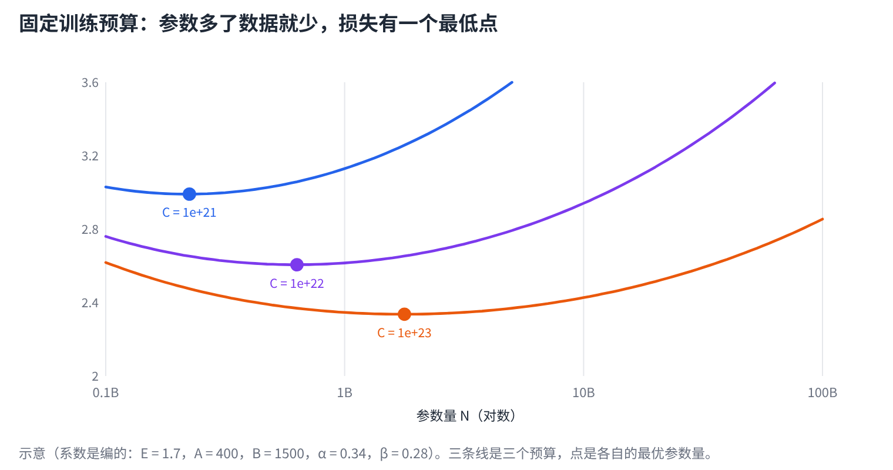
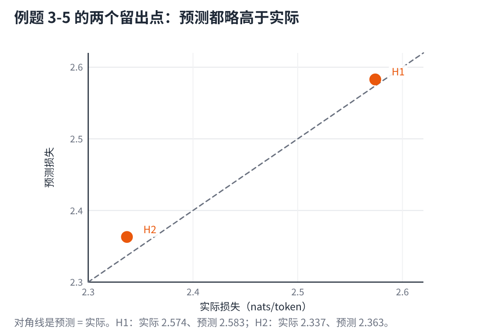
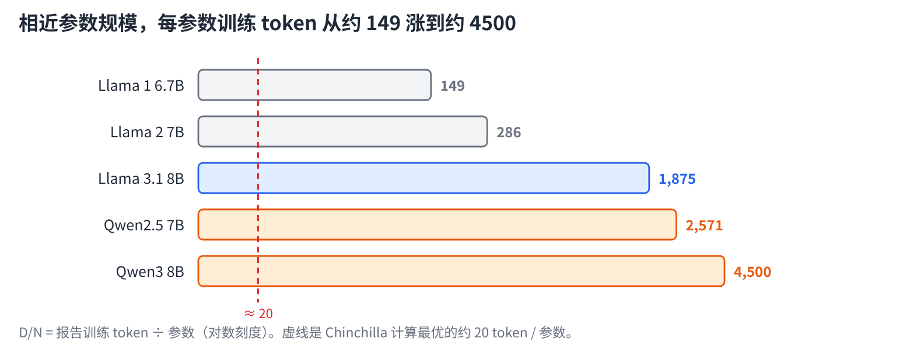
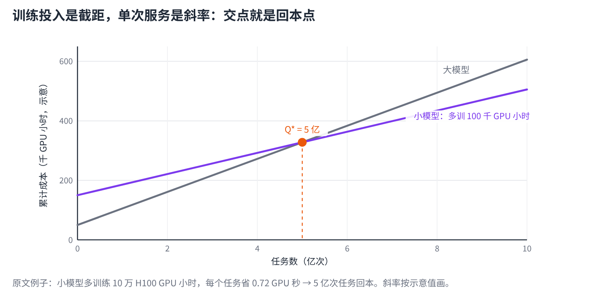
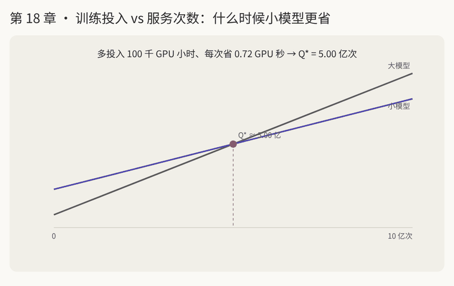

第 18 章 · Scaling law 与全生命周期成本：训练多大、训练多久、服务多少次
本地运行
git clone https://github.com/wikieden/ai-infra-from-constraints
cd ai-infra-from-constraints/code/notebooks
pip install jupyterlab torch numpy
jupyter lab ch18_scaling_lifecycle.ipynb也可以下载后直接用 VS Code 打开 .ipynb 运行。需要 GPU 的章节在 Colab 里选「代码执行程序 → 更改运行时类型 → GPU」。
本章回答：同样的训练算力，该多给参数还是多给数据？拟合出来的规律能预测更大的模型吗？为什么 8B 模型实际训练的数据比"计算最优"多一两个数量级？GPU 小时怎么换成实际天数？多花训练成本换更小的模型，服务多少次能回本？
讲解日期：2026-11-24 · 上一章：第 17 章 训练与强化学习的计算和状态 · 下一章：第 19 章 从矩阵乘法认识加速器
对应原文：materials/ai-infra-book/manuscripts/03-推理与训练负载.md§3.6 L549–L697（例题 3-5、图 3-27 到 3-31）、谬误与陷阱 L699–L707
本章缩写：FLOPs = 浮点运算总次数 · MFU = Model FLOPs Utilization（模型 / 浮点运算 / 利用率）· MMLU = Massive Multitask Language Understanding（大规模 / 多任务 / 语言理解基准）· MoE = Mixture of Experts（混合 / 专家）· OPD = On-Policy Distillation（同策略 / 蒸馏）· RL = Reinforcement Learning（强化 / 学习）。全部缩写见 缩写与术语表
第 17 章算了一次更新要多少。本章往上走一层：总共训练多少参数、多少数据，再加上上线后无数次服务，才是一个模型的全部成本。
讲解
第一步：Scaling law：固定预算，参数和数据怎么分（2026-11-24）
类比：一笔装修预算，花在房子面积上，还是花在装修质量上。 面积太小住不下，装修太差住不舒服；预算固定时，两边此消彼长，中间有个最合适的分法。
公式（原文 L556）：参数 \(N\)、训练 token \(D\)、验证损失
- \(E\)：渐近损失（参数和数据都无穷大时的极限）；\(A/N^\alpha\)：参数不够造成的损失；\(B/D^\beta\)：数据不够造成的损失；\(A, B, \alpha, \beta\) 都是拟合系数。
- 预算约束 \(C = 6ND\)（第 17 章）：\(N\) 加大，\(D\) 就要减小。
最优分法（原文 L564–L571）：用 \(D = C/(6N)\) 消掉 \(D\)，对 \(N\) 求导令其为零（参数多一点带来的下降 = 数据少一点带来的上升）：
例子（原文 L575、L603）：
| 研究 | 预算增加时的分配 |
|---|---|
| Kaplan 等（早期） | \(N \propto C^{0.73}\)，\(D \propto C^{0.27}\)：多给参数 |
| Chinchilla | 接近等比例：\(\alpha \approx \beta\) 时，预算 ×4，参数和数据各 ×2 |
这个最优只在固定训练预算、只看验证损失时成立，不含部署后的推理成本，也不管数据够不够。

图 18-1 · 示意（系数是编的）：横轴是参数量，三条曲线是三个预算；每条曲线的最低点随预算右移。
一句话：固定训练预算，参数和数据此消彼长；拟合出的指数决定新增预算怎么分。
第二步：拟合了，还要留出检验（2026-11-24）
类比：用前几次模拟考的成绩预测高考分数。 拟合时用的分数当然贴得很近，要知道准不准，得拿没参与拟合的那次考试来对。
例题 3-5（原文 L577–L589）：datablations 的 8 个公开 C4 观测，用 6 个较小模型拟合，留出 \(N \ge 2 \times 10^9\) 的 2 个检验。
| 留出模型 | 实际损失 | 预测 | 误差 |
|---|---|---|---|
| H1 | 2.574 | 2.583 | +0.009 |
| H2 | 2.337 | 2.363 | +0.026 |
均方根误差：原文用未四舍五入的误差算得约 0.0193 nats/token；用表里取整后的 0.009、0.026 算是 \(\sqrt{(0.009^2 + 0.026^2)/2} \approx 0.0195\)（nat 是用自然对数算的信息量单位）。

图 18-2 · 对角线是"预测 = 实际"，只画了原文给出数值的两个留出点（6 个拟合点见原文图 3-27）。拟合点的误差不能代替留出点的误差。
还要注意（原文 L591–L593）：验证损失不等于任务表现（Llama 3 先预测损失，再建损失和任务的关系）；同样的设置换随机种子，学习曲线也会不同，要多跑几次区分趋势和偶然波动。
一句话：规律要拿没参与拟合的更大模型检验；预测出损失以后，还要再连到具体任务的质量。
第三步：实际训练为什么远超"计算最优"（2026-11-24）
类比：一家连锁店的厨师培训。 只开一天的店，培训够用就行；要开十年的店，多花时间把厨师培训好，以后每天都省。
公开模型的训练投入（原文 L615–L621，约 7–8B 稠密模型）：
| 模型 | 训练 token | \(D/N\) | \(6ND\) |
|---|---|---|---|
| Llama 1，6.7B | 1T | 149 | \(4.02 \times 10^{22}\) |
| Llama 2，约 7B | 2T | 286 | \(8.40 \times 10^{22}\) |
| Llama 3.1，约 8B | 约 15T | 约 1,875 | 约 \(7.20 \times 10^{23}\) |
| Qwen2.5，约 7B | 约 18T | 约 2,571 | 约 \(7.56 \times 10^{23}\) |
| Qwen3，约 8B | 约 36T | 约 4,500 | 约 \(1.728 \times 10^{24}\) |
按 Chinchilla 的等比例分配，8B 模型的计算最优约每参数 20 个 token（约 160B）；实际投入高出一两个数量级。原因（原文 L625）：开发者把上线后的服务成本算进了目标，预期调用量大、数据充足时，选更小、训练更充分的模型。"训练预算最优"和"全生命周期最优"是两个不同的目标。

图 18-3 · 对数刻度。虚线是 Chinchilla 的约 20 token / 参数。
MoE 要分开算总参数和激活参数（原文 L629–L635）：DeepSeek-V3 总 671B、每 token 激活约 37B、预训练 14.8T；V4-Flash 284B / 约 13B / 32T。主干专家的训练运算可以单独算：
系数 \(18 = 3\)（三个投影）\(\times 2\)（乘加 2 FLOPs）\(\times 3\)（前反向）。V4-Flash 约 45.45 GFLOPs/token，32T 累计约 \(1.454 \times 10^{24}\) FLOPs。
一句话：训练多少数据不只看训练预算；服务越多、越久，越值得把小模型训练得更充分。
第四步：GPU 小时、实际天数与跨设备换算（2026-11-24）
类比：一项工程需要 1000 个人·天。 100 个人干要 10 天，50 个人干要 20 天；人·天是总投入，人数决定工期。
公式（原文 L648）：
例子（原文 L651–L655）：
| 训练 | GPU 小时 | 卡数（假设持续使用） | 实际历时 |
|---|---|---|---|
| Llama 1 65B（A100） | 1,022,362 | 2048 | 约 499.2 小时 = 20.80 天 |
| DeepSeek-V3 预训练（H800） | 2.664M | 2048 | 约 54.20 天 |
| Llama 3.1 405B（H100） | 30.84M | 16,384 | 约 78.43 天 |
跨设备（原文 L657）：不同卡的 GPU 小时不能直接比。按 BF16 稠密峰值折算，一个 H100 / H800 小时约等于 \(989.4 / 312 \approx 3.17\) 个 A100 小时（假设利用率相近，只用来比较规模）。
后训练也能这样比（原文 L663）：Qwen3 报告里同一个 8B 模型的 RL 路线 17,920 GPU 小时，OPD 路线 1,800 GPU 小时。
一句话：GPU 小时是总投入，除以同时用的卡数才是工期；跨设备比较要先按峰值换算。
第五步：全生命周期成本：多花的训练，服务多少次能回本（2026-11-24）
类比：第 06 章的专用芯片回本：前期投入 ÷ 每次节省 = 回本次数。
公式（原文 L670、L678）：
- \(C_0\)：前期（训练）成本；\(Q\)：未来任务数；\(w_j\)：第 \(j\) 类任务占比；\(c_j\)：完成一个该类任务的平均成本（含失败和重试，第 15 章）。
- 比较前，两个模型要满足相同的质量、时限和完成条件。
例子 1（原文 L681）：小模型多训练 10 万 H100 GPU 小时（\(3.6 \times 10^8\) GPU 秒），每个任务省 0.72 GPU 秒：\(Q_* = 3.6 \times 10^8 / 0.72 = 5 \times 10^8\)，五亿次任务回本。
例子 2（原文 L597）：固定目标损失 2.9，\(P = 512\)，\(G = 128\)；训练 \(6ND\)，每个请求 \(2N[P + (G - 1)]\)，都按 40% MFU 折算成 H100 GPU 时间。0.1B 模型比 0.5B 多训练约 73.5 GPU 小时，每次调用省约 0.00129 GPU 秒，约 2.048 亿次调用后总成本相等。因为训练和服务用同一个折算系数，交点和 MFU 取多少无关。（0.1B 需要约 298.6B 训练 token，超出拟合数据的范围，是外推。）

图 18-4 · 小模型截距高（训练多），斜率低（每次便宜）。交点左边选大模型更省，右边选小模型更省。
一句话：全生命周期成本 = 训练 + 服务次数 × 每次成本；多花的训练要靠足够多的服务次数摊回来。
第六步：第 3 部分的四个常见误区（2026-11-24）
原文"谬误与陷阱"L699–L707：
| 误区 | 为什么错 | 回看 |
|---|---|---|
| 平均请求率和长度相同，负载就相同 | 超长请求、长度组合、到达顺序都改变短时需求；例题 3-1 平均够用也积压 | 第 14 章 |
| token 单价降低，成功任务成本就降低 | 额外思考、失败回答、工具与环境都进分子；零成功不能估成功成本 | 第 15 章 |
| 训练 token 总数相同，系统工作量就相同 | 序列分布改注意力配对，标签和词表头改输出工作，更新次数改优化器开销；RL 还要为没采用的回答付费 | 第 17 章 |
| Scaling law 的计算最优，就是该采用的训练规模 | 只在固定训练预算、不计推理成本时成立；实际投入超出一两个数量级是另一个目标下的选择 | 本章 |
负载记录要留哪些字段（原文 L689–L693）：
| 负载 | 必须保留 | 后面哪里用 |
|---|---|---|
| Chat / Agent | 任务检查、模型版本、每轮输入 / 命中 / 输出、到达、工具依赖、分支与复用间隔 | 原书第 8、9、11 章 |
| 视觉 / 实时 | 原图字节、E/P/D、EC/KV、帧或块到达、首响应与连续播放要求、打断 | 原书第 8、9、12 章 |
| 训练 / RL | 数据与质量、长度和标签、micro-batch / 更新、生成数 / 保留数、奖励与模型调用、权重版本、期限 | 原书第 4–7、10、11 章 |
动画演示：训练投入 vs 服务次数：什么时候小模型更省

可交互版：animations/18-scaling-lifecycle.html（两个滑块：小模型多投入的训练 GPU 小时、每次服务节省的 GPU 秒）。
怎么看：
- 两条直线：截距是训练投入，斜率是每次服务的成本（第五步）；
- 交点 \(Q_* = \Delta C_0 / \Delta c\) 标在横轴上；
- 播放时依次演示原文的两组例子：10 万 GPU 小时 / 0.72 秒（5 亿次），73.5 GPU 小时 / 0.00129 秒（约 2 亿次）；
- 拖动滑块，看回本点怎么移动。
练习与作答记录
题 1（第一步）：取 \(\alpha = 0.3\)，\(\beta = 0.3\)。训练预算增加到原来的 16 倍，最优参数量和数据量各变成原来的几倍？如果 \(\alpha = 0.34\)、\(\beta = 0.28\)，参数量的指数是多少？
作答记录：（待作答）
题 2（第四步）：一个训练任务需要 600,000 H100 GPU 小时。用 1024 张卡要多少天？用 4096 张呢？换算成 A100 等效小时大约多少？
作答记录：（待作答）
题 3（第五步）：模型 S 比模型 L 多训练 4.5 万 H100 GPU 小时，每个任务省 0.55 GPU 秒。回本要多少次任务？如果预计一年 3 亿次任务，第一年选哪个？三年呢？
作答记录：（待作答）
原书练习 3-8（L605–L607：\(\alpha = \beta\) 时预算 ×4、×9）、练习 3-9（L641–L643：重算 \(D/N\) 与 \(6ND\)，MoE 专家数加倍）、练习 3-10（L683–L685：2048 / 1024 张 A100 的天数，2 亿 vs 10 亿次任务）。想多练可以做。
口诀
装修预算分面积和质量，指数定怎么分；
模拟考贴得准，留出的才算数；
店开得越久，越值得多培训厨师；
人·天除以人数是工期，换卡先按峰值折；
截距是训练，斜率是服务，交点就是回本。
本章复习卡片
I64（scaling law 与 \(N_{\mathrm{opt}}\) 的指数）、I65（留出检验）、I66（实际训练远超计算最优的原因）、I67（GPU 小时与工期、跨设备换算）、I68（全生命周期成本与回本点）。练习做完后，按答错、卡住的地方再补。
附录 · 延伸阅读
留给以后深入学习用，不影响本章主线。★ 是建议先读的。
推荐阅读
| 读什么 | 读哪里 | 读它为了什么 |
|---|---|---|
| ★ AII 第 3 章 | §3.6 L549–L697、谬误与陷阱 L699–L707 | 本章原文，例题 3-5、图 3-27 到 3-31 |
| ★ Hoffmann 等, Chinchilla（2022） | 第 3 节三种拟合方法 | 等比例分配的来历 |
| Kaplan 等, Scaling Laws for Neural Language Models（2020） | 第 6 节 | 早期的 \(C^{0.73}\) 分配 |
Sardana 等, Beyond Chinchilla-Optimal（原文 [^beyond]） |
全文 | 把推理成本计入最优规模 |
Muennighoff 等, datablations（原文 [^fit]） |
公开实验记录 | 例题 3-5 的数据 |
| Llama 3 技术报告 | scaling law 与任务预测一节 | 先预测损失、再连到任务表现 |
数学原理
- 约束最优化：用约束消去一个变量，对剩下的变量求导令其为零；两项"边际收益"相等时最优。
- 幂律的比例：\(N \propto C^{\gamma}\) 时预算 ×\(k\)，\(N\) ×\(k^{\gamma}\)。
- 均方根误差：误差平方的平均再开方。
- 两条直线的交点：\(a_1 + b_1 Q = a_2 + b_2 Q\) 时 \(Q = (a_1 - a_2)/(b_2 - b_1)\)。
公式清单
| 公式 | 意思 |
|---|---|
| \(L(N, D) = E + A/N^\alpha + B/D^\beta\) | 损失的幂律模型 |
| \(N_{\mathrm{opt}} \propto C^{\beta/(\alpha+\beta)}\)，\(D_{\mathrm{opt}} \propto C^{\alpha/(\alpha+\beta)}\) | 预算分配 |
| \(C_{\mathrm{expert/token}} = 18\,n_L h f (k_r + k_s)\) | MoE 主干专家的训练运算 |
| \(T_{\mathrm{calendar}} = H_{\mathrm{GPU}} / n_{\mathrm{GPU}}\) | 工期 |
| \(C_{\mathrm{life}} = C_0 + Q\sum_j w_j c_j\) | 全生命周期成本 |
| \(Q_* = \Delta C_0 / \Delta c\) | 回本次数 |
代码对照：把本章的数字用代码算一遍
纯 Python，不需要 GPU。代码在仓库本地
ai-infra/solutions/chapter-code/ch18_scaling_lifecycle.py，配套测试tests/test_ch18.py：
bash cd ai-infra/solutions/chapter-code uv run python ch18_scaling_lifecycle.py # 一步一步打印 uv run pytest tests/test_ch18.py
讲义 ↔ 代码：
| 讲义 | 公式 | 写法 | 跑出来 |
|---|---|---|---|
| 第一步 预算分配 | 指数 | alloc_exponents(alpha, beta) |
\(\alpha = \beta\) 时各 0.5 |
| 第二步 留出检验 | 均方根 | rmse([2.583, 2.363], [2.574, 2.337]) |
0.0195（原文用未取整的值得 0.0193） |
| 第三步 \(D/N\) 与 \(6ND\) | 除法、乘法 | history() |
149 … 4500；\(4.02 \times 10^{22}\) … |
| 第三步 V4-Flash 专家 | \(18 n_L h f \cdot 7\) | expert_train_flops(43, 4096, 2048, 6, 1) |
约 45.45 GFLOPs/token |
| 第四步 工期 | 除以卡数 | calendar_days(1_022_362, 2048) 等 |
20.80、54.20、78.43 天 |
| 第五步 回本 | \(\Delta C_0 / \Delta c\) | breakeven_tasks(1e5 * 3600, 0.72) |
\(5 \times 10^8\) |
关键几行：
def calendar_days(gpu_hours, n_gpu):
return gpu_hours / n_gpu / 24 # 总投入 ÷ 同时用的卡数 = 工期
def breakeven_tasks(extra_train_gpu_s, saving_per_task_gpu_s):
return extra_train_gpu_s / saving_per_task_gpu_s
代码里才看得到的 3 件事：
expert_train_flops用的 V4-Flash 层数是 43、\(h = 4096\)、\(f = 2048\)；算出约 45.45 GFLOPs/token，和原文 45.4495 一致，说明原文这个数只计主干专家的三个投影。rmse只用两个留出点；把六个拟合点放进去，误差会小得多，这正是原文说的"拟合点不能代替留出点"。- 工期计算假设整个训练都用满同样多的卡；真实训练分阶段，卡数会变，原文说的"资源分配时序决定完成时间"就是这个意思。
自己改一改（不影响练习答案）：
- 用
alloc_exponents试 Kaplan 的分配：要让 \(N \propto C^{0.73}\)，\(\alpha\) 和 \(\beta\) 的比大概是多少？ - 把 DeepSeek-V3 的 2.664M H800 小时换算成 A100 等效小时。
- 把回本例子里每次节省从 0.72 秒降到 0.1 秒，看回本次数涨多少。